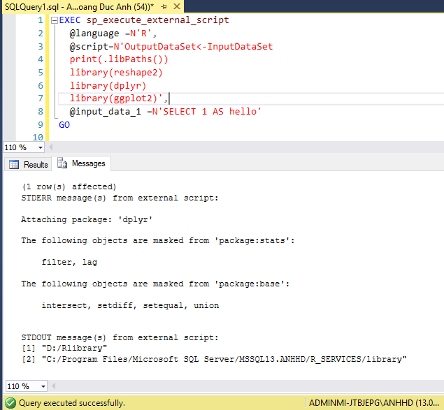

When starting using with R, installing and managing R libraries seems not to be a difficult task at all. However, when updating R to new version, it will make some problems. For most cases, you have to re-install your library, which takes much time.
There is another tricky way to solve that problem, which is to copy all your old libraries to the new library folder. For example, all your libraries in R version 3.3 are in C:/Program Files/R/R-3.3.0/library. Now that you update your R version to 3.4.0 but don’t want to install all libraries, an easy way (not the easiest) to do it is to copy all folders from D:\My Documents\R\win-library\3.3 to the new one D:\My Documents\R\win-library\3.4.
However, this approach has some disadvantages. Firstly, it takes time to copy from old library folder to the new one, some time it takes up to 40~50 minutes when you are using many libraries. Secondly, if you have multiple versions of R, the approach might consume unnecessary couple of Gigabytes in your disk (as libraries are duplicated). Finally, you cannot install libraries once and use it multiple times, for each version of R (for me, R from CRAN and Microsoft R & R Services) you have to install (or copy) from each folder to another ones.
Therefore, I found a very efficient way that can simplify all theses difficulties above in few easy steps.
- Step 1: Create a permanent folder for your R library in your laptop. For me, I created a folder in
D:/Rlibrary - Step 2: Copy all folders from your original R library (in my case is
D:\My Documents\R\win-library\3.3) toD:/Rlibrary - Step 3: Now, you have to make R understand
D:/Rlibrary(new folder) is your default libraries, all new libraries will be installed to that folder.- Open R Studio to find your R library paths
.libPaths()## [1] "D:/Rlibrary"
## [2] "C:/Program Files/R/R-3.4.1/library"You will see that I have 2 paths, one is my D:/Rlibrary - just ignore it & the second one C:/Program Files/R/R-3.3.0/library. We will change the default library paths as follows:
- Go to
C:/Program Files/R/R-3.3.0/library - Go to folder
base\R - Copy file
Rprofileto desktop - Open
Rprofilewith text editor - Add the following code in the end
.libPaths("D:/Rlibrary")`- Copy
Rprofileback toC:/Program Files/R/R-3.3.0/library/base/R
Restart R studio and when typing .libPaths(), you will see your default library changed to D:/Rlibrary
This method can be applied to R Server & R Services as well for Microsoft R Server. For my local server, I changes Rprofile files in following folders:
- R Server:
C:\Program Files\Microsoft\R Server\R_SERVER\library\base\R - R Services:
C:\Program Files\Microsoft SQL Server\MSSQL13.ANHHD\R_SERVICES\library\base\R
After doing it, you can see all libraries from all R version, R from CRAN, R Server & R Service from Microsoft synchronized! When you install a new library from CRAN, you R Service from SQLRServer can use it, too! Really fantastic!

Isn’t it great! For me, this little trick help me a lot! Hope that you will enjoy it and find it helpful! Let me know if you have any comment!